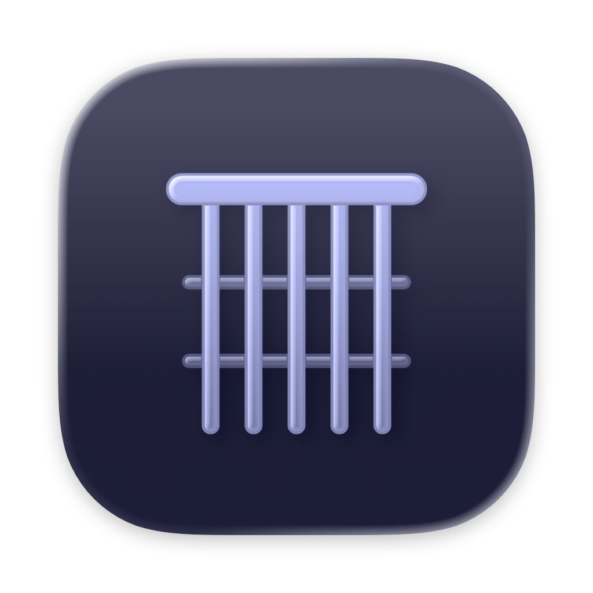

In development · App Store
A practice suite for guitarists, on Mac, iPad and iPhone. It opens the exercises a teacher hands out (Guitar Pro, MusicXML, MuseScore, MIDI, a pasted tab), plays them against a click, and prints under every note how many milliseconds early or late you landed. Chords and the fretboard are drilled by playing them: the app listens and moves on when it hears the answer. A weekly plan holds it together and adjusts to how the week went. The library follows you through iCloud.
Why Luthia
A metronome says where the beat is. Luthia says where you were, note by note, in milliseconds.
Most practice apps ship their own curriculum. Luthia is built to sit next to a teacher's: the course files land in a folder, every exercise opens in the same editor, and the click and the timing work on all of it. Guitar Pro 3 through 8, MusicXML, MuseScore, MIDI and pasted ASCII tab all import, with the written fingering kept and every simplification listed before the file is saved.
The timing is measured, not judged. The click, the input and the score share one clock; each pick is found on the attack, matched to the note it was meant for, and reported as a signed number of milliseconds. A session reports two things: the spread of those numbers, which is what practice changes, and the lead, how far ahead of the click you sit, which is the human default; it is reported and left alone. There is no score and no star rating.
Chords and the neck are drilled with the instrument in hand. The chord drill names a chord and waits until it hears it; the fretboard drills ask for a note, an interval, a degree, a chord tone, a triad or a note on the staff, and accept the answer played or tapped. Every drill also runs with no guitar at all, from name chips, so the theory half works on the train.
The app is free. Every mode and every mechanic run on the free tier; a single in-app purchase, Luthia Pro, opens the content library and the planner, on every device at once.
Five modes
One window, ⌘1 through ⌘5. The metronome and the tuner sit beside whichever mode is open.
Train
Per-note deviation in milliseconds, spread and lead for the session, a row per loop, all on one clock.
Listen, click, Space. The count-in is yours: the session anchors to the first onset it hears and the loop starts on the nearest bar line. From then on every pick is matched to the note it was meant for and the deviation lands under that note on the score, last and running average, negative for early. A first note played a little early rolls into the next loop instead of being dropped, and an exercise with repeats is played as written, every pass of a repeated note folding into the same statistics.
Import, compose, export
The teacher's file is the exercise. Nothing is retyped.
Chords & fretboard
Drilled by ear: the app listens for the answer.
Practice
The week, and what to do in it.
Free and Pro
One in-app purchase, $19.99. Mac, iPad and iPhone on one purchase, Family Sharing on. No subscription.
Nothing already in the library is ever locked. Whatever it holds stays usable, trainable and editable, on every device, whatever the purchase state; the free tier's limit applies to adding. Locked items stay visible with a lock and open the purchase sheet when tapped.
Mac, iPad, iPhone
Requirements
All analysis is local. Audio is never recorded for anyone else, and the library lives on your devices and your own iCloud account. Privacy policy.
Dig deeper
The full reference · 3 docsStatus
Luthia is in development at Headroom Studio, the one-person shop behind Specula, Audita and Lyra. The five modes described above are built and in daily use; the App Store listing and the first public release are being prepared. This page gains its App Store link when 1.0 is out.
Questions, or a file format you need covered? hello@headroomstudio.dev.